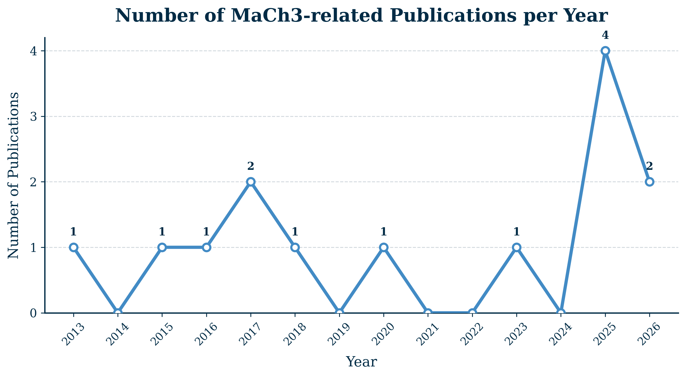
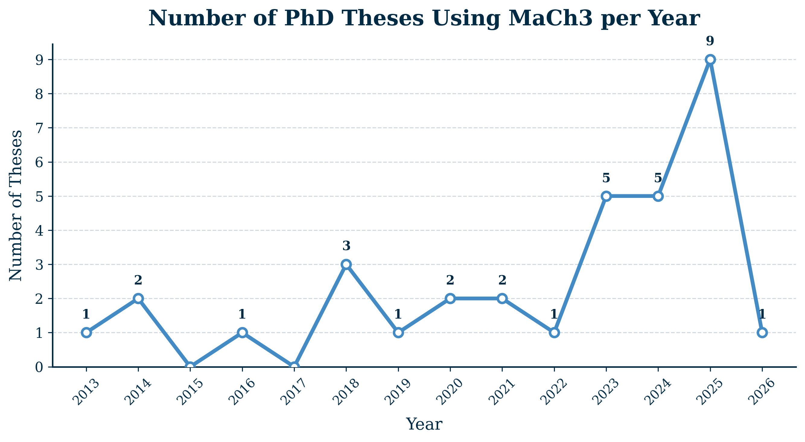

Results and Publications#
Last updated: 15 September 2026
Publications using MaCh3#
The DUNE Collaboration. A Bayesian approach to the long-baseline neutrino oscillation sensitivity of DUNE. arXiv:2608.04059 (2026). https://doi.org/10.48550/arXiv.2608.04059
The T2K Collaboration. Constraining Neutrino Interaction Uncertainties for Neutrino Oscillation Measurements at the T2K Experiment. arXiv:2606.14015 (2026) https://doi.org/10.48550/arXiv.2606.14015
The T2K Collaboration. Results from the T2K Experiment on Neutrino Mixing Including a New Far Detector μ-like Sample. Phys. Rev. Lett., 135(26), 261801 (2025). https://doi.org/10.1103/gh5j-5cwv
The T2K Collaboration. Testing T2K’s Bayesian constraints with priors in alternate parameterisations. Eur. Phys. J. C, 85(12), 1414 (2025). https://doi.org/10.1140/epjc/s10052-025-14836-0
The T2K and NOvA Collaborations. Joint neutrino oscillation analysis from the T2K and NOvA experiments. Nature 646, 818-824 (2025). https://doi.org/10.1038/s41586-025-09599-3
The T2K and Super-Kamiokande Collaborations. First joint oscillation analysis of Super-Kamiokande atmospheric and T2K accelerator neutrino data. Phys. Rev. Lett., 134(1), 011801 (2025). https://doi.org/10.1103/PhysRevLett.134.011801
The T2K Collaboration. Measurements of neutrino oscillation parameters from the T2K experiment using 3.6×10²¹ protons on target. Eur. Phys. J. C, 83(9), 782 (2023). https://doi.org/10.1140/epjc/s10052-023-11819-x
The T2K Collaboration. Constraint on the matter–antimatter symmetry-violating phase in neutrino oscillations. Nature 580, 339–344 (2020). https://doi.org/10.1038/s41586-020-2177-0
The T2K Collaboration. Search for CP violation in neutrino and antineutrino oscillations by the T2K experiment with 2.2×10²¹ protons on target. Phys. Rev. Lett., 121(17), 171802 (2018). https://doi.org/10.1103/PhysRevLett.121.171802
The T2K Collaboration. Measurement of neutrino and antineutrino oscillations by the T2K experiment including a new additional sample of νₑ interactions at the far detector. Phys. Rev. D, 96(9), 092006 (2017). https://doi.org/10.1103/PhysRevD.96.092006
The T2K Collaboration. Combined analysis of neutrino and antineutrino oscillations at T2K. Phys. Rev. Lett., 118(15), 151801 (2017). https://doi.org/10.1103/PhysRevLett.118.151801
The T2K Collaboration. Measurement of muon antineutrino oscillations with an accelerator-produced off-axis beam. Phys. Rev. Lett., 116(18), 181801 (2016). https://doi.org/10.1103/PhysRevLett.116.181801
The T2K Collaboration. Measurements of neutrino oscillation in appearance and disappearance channels by the T2K experiment with 6.6×10²⁰ protons on target. Phys. Rev. D, 91(7), 072010 (2015). https://doi.org/10.1103/PhysRevD.91.072010
The T2K Collaboration. Measurement of Neutrino Oscillation Parameters from Muon Neutrino Disappearance with an Off-axis BeamMeasurement of Neutrino Oscillation Parameters from Muon Neutrino Disappearance with an Off-axis Beam. Phys. Rev. Lett. 111, 211803 (2013). https://doi.org/10.1103/PhysRevLett.111.211803

Theses using MaCh3#
Naseem Khan, Prototyping of and sensitivity studies for a gaseous argon near detector for the deep underground neutrino experiment, (2026)
Marcelo Ismerio Moreira Leite de Oliveira, Atmospheric Neutrino Analyses in the Deep Underground Neutrino Experiment, (2025)
Michael Reh, Analysis of Detector Systematic Uncertainties Using Atmospheric Neutrinos in a Novel Markov Chain Monte Carlo Framework for T2K Data Runs 1-11, (2025)
Liban Warsame, First Bayesian neutrino oscillation analysis of DUNE, (2025)
Tailin Zhu, Measurement of neutrino oscillation parameters at T2K using new neutral current pion samples and probing future sensitivities with Hyper-Kamiokande, (2025)
Menai Lamers James, Development of a boosted decision tree antineutrino photon near detector sample for T2K, and design of the Hyper-Kamiokande outer detector and DAQ, (2025)
Andres Lopez Moreno, Reparametrisations of the leptonic mixing matrix for neutrino oscillation analysis in the T2K experiment, (2025)
Henry Wallace, Analysis of Neutrino Oscillations at Current and Future Accelerator Neutrino Experiments, (2025)
Ewan Miller, Constraining the Flux and Cross Section Uncertainties for the T2K Experiment Using ND280 Data, (2025)
Junjie Jiang, First Bayesian Results of a Joint Neutrino Oscillation Analysis between T2K Beam Neutrinos and Super-Kamiokande Atmospheric Neutrinos, (2024)
Thomas Holvey, New measurements of neutrino oscillation parameters and development of novel interaction uncertainties at current and future long-baseline experiments, (2024)
Yashwanth S Prabhu, Expanded νe CC1π+ sample selection and improved systematic treatments for neutrino oscillation parameter determination with T2K data, (2024)
Alex Carter, Constraining systematic uncertainties using T2K Near Detector with X and Y FGD2 scintillator layers information in Markov chain Monte Carlo framework, (2024)
Dan Martin, Neutrino oscillation analysis using T2K data with additional single ring NCπ⁰ samples (2024)
Nauman Akhlaq, Developing the T2K Neutrino Oscillation Analysis by Using Pion Samples at the Near Detector, (2023)
Evan Arthur Gerald Goodman, Combining T2K With Other Experiments to Better Constrain Oscillation Parameters, (2023)
Kamil Skwarczynski, Constraining neutrino cross-section and flux models using T2K Near Detector with proton information in Markov chain Monte Carlo framework, (2023)
Chloë Naseby, Understanding the impact of an expanded neutral current pion production model on long-baseline oscillation analyses at T2K, (2023)
Ed Atkin, Neutrino Oscillation Analysis at the T2K experiment including studies of new uncertainties on interactions involving additional final state hadrons, (2023)
Dan Barrow, The sensitivity to oscillation parameters from a simultaneous beam and atmospheric neutrino analysis that combines the T2K and SK experiments, (2022)
Artur Sztuc, Standard and non-standard neutrino-antineutrino oscillation analyses and event reconstruction studies using Markov chain Monte Carlo methods at T2K, (2021)
Kevin Wood, Measurement of Neutrino Oscillation Parameters with T2K Data Corresponding to 3.6 × 10^21 Protons on Target Using a Bayesian Framework, (2021)
Will Parker, Constraining Systematic Uncertainties at T2K using Near Detector Data, (2020)
Tomoyo Yoshida, A study of single charged-pion production events at Super-Kamiokande induced by charged-current interaction of T2K-beam muon neutrinos, (2020)
Clarence Wret, Minimising Systematic Uncertainties in the T2K Experiment Using Near-Detector and External Data, (2019)
Xiaoyue Li, A Joint Analysis of T2K Beam Neutrino and Super-Kamiokande Sub-GeV Atmospheric Neutrino Data, (2018)
Leïla Haegel, Measurement Of Neutrino Oscillation Parameters Using Neutrino And Antineutrino Data Of The T2K Experiment, (2018)
Elder Pinzon, Measurement of Pion-Carbon Cross Sections at DUET and Measurement of Neutrino Oscillation Parameters at the T2K Experiment, (2018)
Kirsty Duffy, Measurement of the neutrino oscillation parameters sin2θ23, ∆m232, sin2θ13, and δCP in neutrino and antineutrino oscillation at T2K, (2016)
Patrick de Perio, Joint Three-Flavour Oscillation Analysis of Numu Disappearance and Nue Appearance in the T2K Neutrino Beam, (2014)
Richard Calland, A 3 flavour joint near and far detector neutrino oscillation analysis at T2K, (2014)
Casey Bojechko, Simultaneous Analysis of Near and Far Detector Samples of the T2K Experiment to Measure Muon Neutrino Disappearance, (2013)
